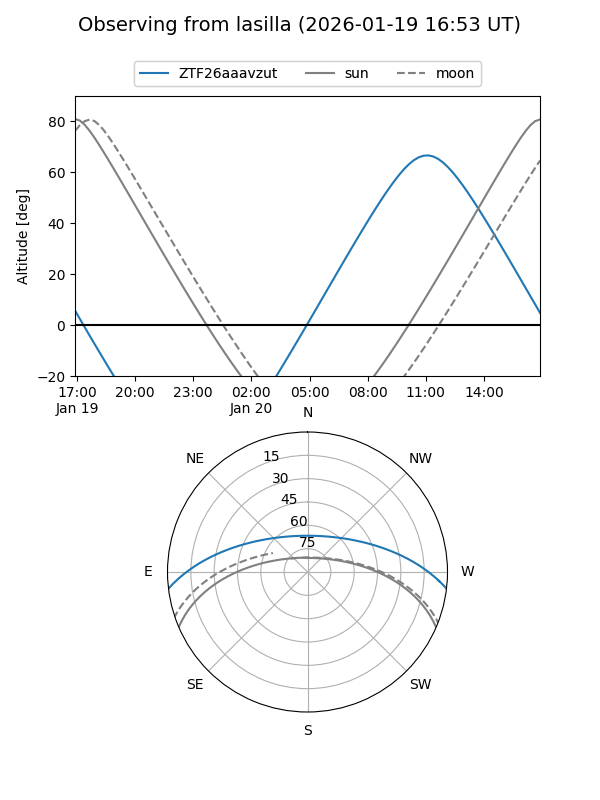
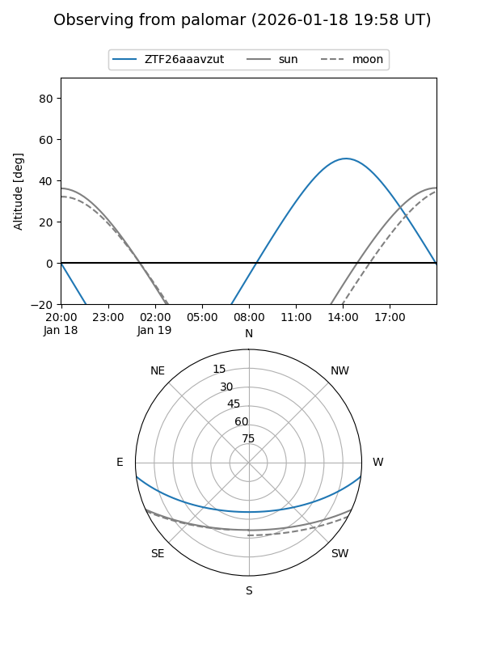

ZTF26aaavzut
Target ZTF26aaavzut at 2026-01-19 12:35
Aliases and brokers:
FINK: link
Lasair: link
ALeRCE: link
alt names
ZTF26aaavzut (ztf,fink_ztf)
Coordinates:
equatorial (ra, dec) = 214.6821,-5.81769
equatorial (HMS+DMS) = 14:18:43.71,-05:49:03.67
galactic (l, b) = (338.8078,+50.87174)
Flags:
Photometry:
last ztfr=19.83
1 ztfr detections
Lightcurve

Visibility


Additional plots